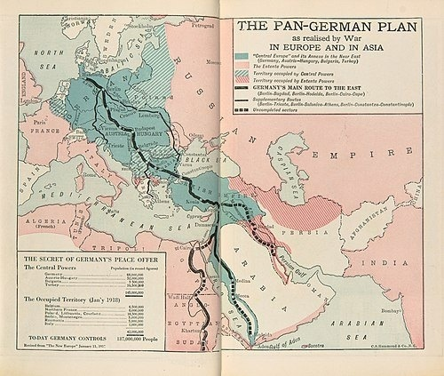
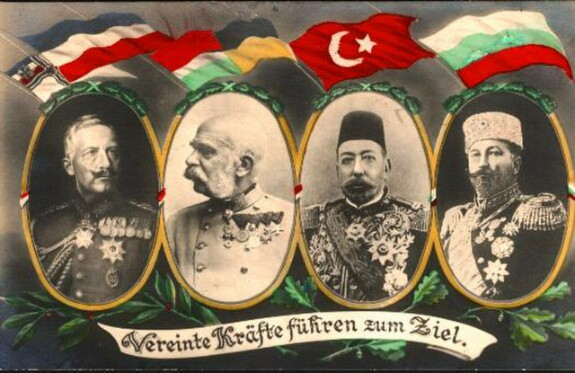

Геополитика Вильгельма II
Автор статьи: Максим Вахминцев
Опубликовано: 5 июня 2024
Опубликовано: 5 июня 2024
1888 год вошёл в историю Германии как "год трех императоров". Кончина основателя империи, Вильгельма I, и, пожалуй, одного из самых перспективных наследников Европы своего времени, кронпринца Фридриха, открыла дорогу к власти 28-летнему принцу Вильгельму.
Новый кайзер сразу же выступил с воззванием к армии и флоту, напоминая о воинских традициях Пруссии и Германии. Вильгельм обещал преумножать славу империи, любой ценой отстаивать её престиж на международной арене.
Новый кайзер сразу же выступил с воззванием к армии и флоту, напоминая о воинских традициях Пруссии и Германии. Вильгельм обещал преумножать славу империи, любой ценой отстаивать её престиж на международной арене.
Свои слова император подкрепил делом. Вильгельм принял лично на себя командование флотом, в 1889 году упразднив Верховное главнокомандование кайзерлихмарине (военно-морских сил Германии). Он стремился превратить германский флот в достойного конкурента британскому, американскому и российскому флотам.
Вильгельм желал превратить свою страну в мощную колониальную державу, претендовал на земли в Африке, Азии и Океании. Кайзер декларировал цель распространения германской культуры в Китае, Камеруне, Папуа Новой Гвинее, Намибии, архипелаге Бисмарка и т.д.
Однако в колонии других держав (Британии, Франции, Португалии, Бельгии и др.) вывозилось значительно больше товаров, чем, собственно, в колонии самой Германии. Что примечательно, за почти 30 лет германское командование так и не смогло создать сколь-нибудь надёжную систему их обороны - большая часть колоний капитулировала уже в 1914 году, в самом начале Первой мировой войны.
Вильгельм желал превратить свою страну в мощную колониальную державу, претендовал на земли в Африке, Азии и Океании. Кайзер декларировал цель распространения германской культуры в Китае, Камеруне, Папуа Новой Гвинее, Намибии, архипелаге Бисмарка и т.д.
Однако в колонии других держав (Британии, Франции, Португалии, Бельгии и др.) вывозилось значительно больше товаров, чем, собственно, в колонии самой Германии. Что примечательно, за почти 30 лет германское командование так и не смогло создать сколь-нибудь надёжную систему их обороны - большая часть колоний капитулировала уже в 1914 году, в самом начале Первой мировой войны.
В вопросе колониальной экспансии Вильгельм существенно расходился с Бисмарком, считавшим эти захваты слишком рискованным предприятием. Канцлер не желал из-за амбиций молодого императора ставить под угрозу единство Германской империи, достижению которого он посвятил многие годы своей жизни.
"Новый курс" Вильгельма привёл также к развалу благожелательных отношений с Россией. Он начался ещё после Берлинского конгресса 1878 года и подписания военного союза между Германией и Австро-Венгрией, однако при Вильгельме достиг кульминации. По инициативе германской стороны в 1890 году было прекращено действие Договора о перестраховке, заключённого с Россией в 1887 году в условиях распада Союза трех императоров.
Вильгельм был едва ли не единственным монархом Европы в начале ХХ века, который отстаивал идею создания Соединённых Штатов Европы (нем. Mitteleuropa), как не трудно догадаться прототипа сегодняшнего Европейского союза. Гарантом его существования он считал отторжение от России её западных окраин - Польши, Финляндии, Прибалтики, Белоруссии, Украины и Закавказья. Замысел Вильгельма был реализован после подписания с большевиками Брестского мира в марте 1918 года. Были созданы:
Королевство Финляндия;
Королевство Литва и Белорусская Народная республика (обе на территории бывшего Ober Ost);
Украинская держава Скоропадского (на месте УНР), с ней Германия подписала продовольственное соглашение, призванное спасти страну от голода;
Объединенное Герцогство Балтийское;
Королевство Польское (на месте бывшего Царства Польского ещё в 1915 году).
Политика Вильгельма в отношении восточных окраин Российской империи совпала со взглядами держав Антанты, которые после окончания Первой мировой войны признали независимость "лимитрофных государств".
"Новый курс" Вильгельма привёл также к развалу благожелательных отношений с Россией. Он начался ещё после Берлинского конгресса 1878 года и подписания военного союза между Германией и Австро-Венгрией, однако при Вильгельме достиг кульминации. По инициативе германской стороны в 1890 году было прекращено действие Договора о перестраховке, заключённого с Россией в 1887 году в условиях распада Союза трех императоров.
Вильгельм был едва ли не единственным монархом Европы в начале ХХ века, который отстаивал идею создания Соединённых Штатов Европы (нем. Mitteleuropa), как не трудно догадаться прототипа сегодняшнего Европейского союза. Гарантом его существования он считал отторжение от России её западных окраин - Польши, Финляндии, Прибалтики, Белоруссии, Украины и Закавказья. Замысел Вильгельма был реализован после подписания с большевиками Брестского мира в марте 1918 года. Были созданы:
Королевство Финляндия;
Королевство Литва и Белорусская Народная республика (обе на территории бывшего Ober Ost);
Украинская держава Скоропадского (на месте УНР), с ней Германия подписала продовольственное соглашение, призванное спасти страну от голода;
Объединенное Герцогство Балтийское;
Королевство Польское (на месте бывшего Царства Польского ещё в 1915 году).
Политика Вильгельма в отношении восточных окраин Российской империи совпала со взглядами держав Антанты, которые после окончания Первой мировой войны признали независимость "лимитрофных государств".
{kind=link}
Давние связи Пруссия имела и с Османской империей. В свое время они серьезно помогли прусскому королю Фридриху Великому добиться от русской императрицы Екатерины II согласия на раздел Речи Посполитой. Теперь же растущая германская экономика нуждалась в выходе на ближневосточные и азиатские рынки, для чего был необходим контроль над Черноморскими проливами, за который к тому времени Россия билась уже два века.

{kind=link}
Британский плакат "Плана пангерманистов", 1918. На нем изображена
ведущая к Судану и Персидскому заливу железная дорога через территории Германии,
Австро-Венгрии, Сербии, Болгарии, Османской империи и Египта.

ведущая к Судану и Персидскому заливу железная дорога через территории Германии,
Австро-Венгрии, Сербии, Болгарии, Османской империи и Египта.
{kind=link}
"Объединенные усилия ведут к цели" - плакат с изображением лидеров стран блока Центральных держав:
германского кайзера Вильгельма II, императора Австрии и короля Венгрии Франца Иосифа,
османского султана Мехмеда V и болгарского царя Фердинанда.
германского кайзера Вильгельма II, императора Австрии и короля Венгрии Франца Иосифа,
османского султана Мехмеда V и болгарского царя Фердинанда.
Кайзер Вильгельм выказывал всяческое уважение к исламу, публично называл себя "другом мусульман". Ему импонировал боевой дух османских воинов и он считал необходимым поддерживать турецких националистов в их стремлении как избавиться от отягощающей экономической зависимости от Запада, так и вернуть утраченные позиции на Балканах и Кавказе в результате успешной экспансии России в 18-19 веках.
Немалые надежды Вильгельм возлагал на Италию, которая в 1866 году выступила на стороне Пруссии в войне против Австрии. Объединенное Итальянское королевство стало после 1870 года весомым игроком в Средиземноморье. Имея достаточно мощный военный флот, Италия желала захватить колонии в Ливии, Эфиопии и Сомали, а также свергнуть господство англичан в Египте и на Ближнем Востоке.
Однако куда больше королевское правительство заботил вопрос присоединения Южного Тироля и побережья Адриатики, в которых проживало немало итальянцев и которые в то время находились под властью Австро-Венгрии. Габсбурги долгое время препятствовали объединению Италии - в 18 веке они владели Тосканой, Пармой, Пьяченцей, герцогством Миланским и некоторое время Неаполитанским королевством, а после 1815 года боролись против национальных движений в итальянских государствах.
Ирредентисты - сторонники объединения всех италоязычных земель под властью Савойской династии - требовали от последней прежде всего решить вопрос с европейскими территориями. Это делало неизбежным разрыв отношений Италии с Австро-Венгрией и Тройственным союзом, что лишало Германию важнейшего союзника в Средиземноморье.
{kind=link}
#/media/File:Die_verbündeten_Monarchen_mit_ihren_Feldherren_im_1._Weltkrieg.jpg)
Людвиг Кох. Франц Иосиф I и Вильгельм II с военачальниками во время Первой мировой войны (1915).
Говоря о геополитике кайзера Вильгельма II, нельзя не упомянуть, конечно же, Австро-Венгрию, которую тот считал, разумеется, ключевым союзником Германии в Европе. На словах отстаивая целостность Австро-Венгрии и поддерживая её притязания на Балканах, Вильгельм фактически играл на противоречиях между её народами. Император полагался на исторические и культурные связи с австрийскими немцами.
Последние, после окончания периода австро-прусского дуализма, борьбы Габсбургов и Гогенцоллернов за господство в Германии, нуждались в сильном союзнике против "славянской угрозы", а также растущего влияния Венгерского королевства в составе империи Габсбургов. А оно в период премьерства Кальмана Тисы укрепилось настолько, что именно Будапешт, а не Вена, фактически стал считаться центром определения внешней политики Австро-Венгрии.
Последние, после окончания периода австро-прусского дуализма, борьбы Габсбургов и Гогенцоллернов за господство в Германии, нуждались в сильном союзнике против "славянской угрозы", а также растущего влияния Венгерского королевства в составе империи Габсбургов. А оно в период премьерства Кальмана Тисы укрепилось настолько, что именно Будапешт, а не Вена, фактически стал считаться центром определения внешней политики Австро-Венгрии.
Важную роль в европейской политике Германии играла Болгария, которой правили представители Саксен-Кобург-Готской династии. Немецкие политики грамотно использовали реваншизм Болгарии, её стремление стать ведущей державой Балканского полуострова и установить влияние на всех территориях, входивших когда-то в Первое Болгарское царство.
Это осложняло отношения Софии с Румынией, Сербией, Грецией и другими членами Антанты, а присоединение сербской Македонии болгары считали куда более необходимым, чем захват Адрианополя (болг. Одрин), санкцию на который была готова дать Антанта. Манили болгарских политиков и перспективы экономического сотрудничества с Германией - через Болгарию должна была пройти Багдадская железная дорога, связывающая Берлин, Вену и Константинополь.
Все эти факторы, в конце концов, определили разрыв союзных отношений между Россией и Болгарией. Последняя была обязана именно нашей стране своей независимостью, о чем не переставали упоминать в Петербурге. Болгары, в свою очередь, считали Россию предательницей, поскольку та ставила интересы соседних с Болгарией стран выше интересов самой Болгарии.
Вторая Балканская война поставила ее в положение изоляции, она была вынуждена сражаться сразу на нескольких фронтах и, ожидаемо, потерпела поражение. Это только усиливало болгарский реваншизм и мобилизацию общественного сознания Болгарии.
{kind=link}
Поражение Германии в Первой мировой войне привело к крушению её геополитических позиций. Основными выгодополучателями от поддержки Германией создания лимитрофных государств на окраинах России стали Великобритания и Франция. Они же получили все колонии бывшей Германской империи.
Восстановление позиций Германии в Европе началось с подписания Раппальского договора с СССР, а также Локарнских соглашений с Францией и Британией, декларировавших нерушимость послевоенных границ в Европе. Падение колониальной империи в 1918 году оказало влияние на последующий выбор нацистами континентального вектора геополитики.
{kind=link}